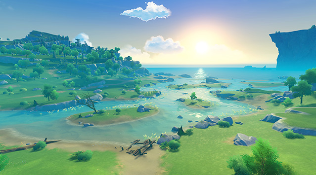

A natural freshwater lake.
The lake's wide, crystalline appearance has remained unchanged for eons — so clear you can see the
bottom, and cool and refreshing to drink. It is none other than these headwaters that brought Mondstadt's ciders
and wines to fame and made the lake the symbol of Mondstadt that it is today.

Falcon Coast: stretching eastward from Windrise to the sea, Falcon coast — together with
Cape Oath — shelters the sea from three sides, creating a bay that sits east of Mondstadt.
Given the long coastline and shallow waters, citizens of Mondstadt often come here to
enjoy a nice stroll. On occasion, you can see falcons soaring high above the blue waves that brush upon
the white sand.

Cape Oath:
In the southeast corner of Mondstadt's surrounds lies a cape that borders with Galesong Hill.
Legend has it two lovers made an oath to each other here and left behind a deeply touching story.
To this day the area is still known to be popular amongst young lovebirds.
Other than being a great vantage point for watching sunrises and sunsets, the drop in terrain makes it
easy to see Wind rise, which sits facing the sea.

Dawn Winery:
Nestled in the land southwest of Mondstadt sits the winery that has passed down the legacy of
Mondstadt's traditional wines and ciders for generations. The grapes grown here are used to produce a range of wines
that are popular right across Teyvat. Every year's products are split, with a portion being sold locally within Mondstadt, the rest is sold
off via the trade route that sits south of the city.

Springvale:
A sleepy little village to the south of Mondstadt, that sits facing the lake that surrounds the city.
Most of the village's residents are hunters that provide fresh meat for all the big restaurants of
Mondstadt. Springvale's rustic appeal attracts many tourists. If you are lucky in your travels, you may come across
a restaurant that truly knows how to bring out the best qualities of Springvale's meat.

Thousand Winds Temple:
A collection of temple ruins that sits northeast of Mondstadt.
According to local legend, millennia ago this area was a temple for worshipping the Anemo God.
Though it has been left to waste for centuries, leaving the ruins you see today. If you look
closely at some of the stone pillars, you can still faintly make out some elegant carvings.
This long-forgotten symbol of commemoration is engraved with the maxim: "Wind brings the seeds of tales,
time allows them to take root."